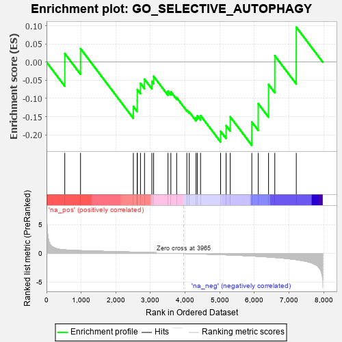
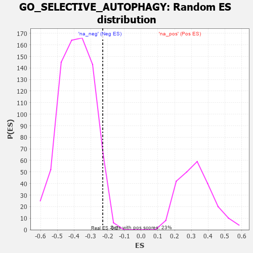

| | | Dataset | 7d |
| Phenotype | NoPhenotypeAvailable |
| Upregulated in class | na_neg |
| GeneSet | GO_SELECTIVE_AUTOPHAGY |
| Enrichment Score (ES) | -0.22871952 |
| Normalized Enrichment Score (NES) | -0.59334993 |
| Nominal p-value | 0.94784874 |
| FDR q-value | 1.0 |
| FWER p-Value | 1.0 |
Table: GSEA Results Summary

Fig 1: Enrichment plot: GO_SELECTIVE_AUTOPHAGY
Profile of the Running ES Score & Positions of GeneSet Members on the Rank Ordered List
| PROBE | GENE SYMBOL | GENE_TITLE | RANK IN GENE LIST | RANK METRIC SCORE | RUNNING ES | CORE ENRICHMENT | | 1 | HTRA2 | | | 527 | 0.621 | 0.0235 | No |
| 2 | UBA5 | | | 982 | 0.488 | 0.0369 | No |
| 3 | HUWE1 | | | 2506 | 0.225 | -0.1221 | No |
| 4 | WIPI2 | | | 2618 | 0.210 | -0.1058 | No |
| 5 | BAG3 | | | 2620 | 0.209 | -0.0756 | No |
| 6 | PHB2 | | | 2712 | 0.197 | -0.0585 | No |
| 7 | BECN1 | | | 2828 | 0.179 | -0.0471 | No |
| 8 | UFL1 | | | 3041 | 0.144 | -0.0530 | No |
| 9 | TIGAR | | | 3091 | 0.138 | -0.0392 | No |
| 10 | UFM1 | | | 3506 | 0.077 | -0.0802 | No |
| 11 | MAPK3 | | | 3589 | 0.062 | -0.0816 | No |
| 12 | ATG2B | | | 3756 | 0.033 | -0.0977 | No |
| 13 | ATG5 | | | 4051 | -0.016 | -0.1324 | No |
| 14 | WDFY3 | | | 4119 | -0.026 | -0.1371 | No |
| 15 | AUP1 | | | 4315 | -0.062 | -0.1528 | No |
| 16 | ADRB2 | | | 4352 | -0.068 | -0.1474 | No |
| 17 | CDC37 | | | 4446 | -0.084 | -0.1470 | No |
| 18 | WDR81 | | | 5024 | -0.203 | -0.1902 | Yes |
| 19 | HDAC6 | | | 5183 | -0.244 | -0.1748 | Yes |
| 20 | RAB7A | | | 5302 | -0.271 | -0.1505 | Yes |
| 21 | UFC1 | | | 5925 | -0.443 | -0.1646 | Yes |
| 22 | ATG13 | | | 6110 | -0.508 | -0.1142 | Yes |
| 23 | HSPB8 | | | 6408 | -0.621 | -0.0617 | Yes |
| 24 | RNF41 | | | 6588 | -0.703 | 0.0175 | Yes |
| 25 | MFN2 | | | 7208 | -1.081 | 0.0960 | Yes |
Table: GSEA details [plain text format]

Fig 2: GO_SELECTIVE_AUTOPHAGY: Random ES distribution
Gene set null distribution of ES for GO_SELECTIVE_AUTOPHAGY